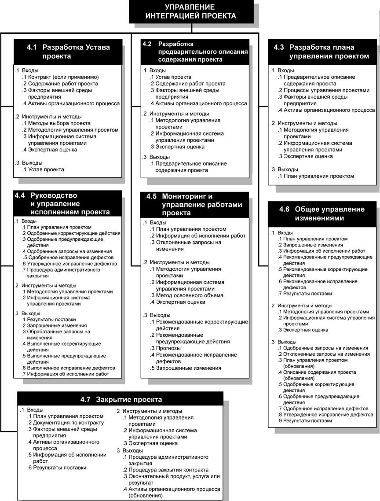
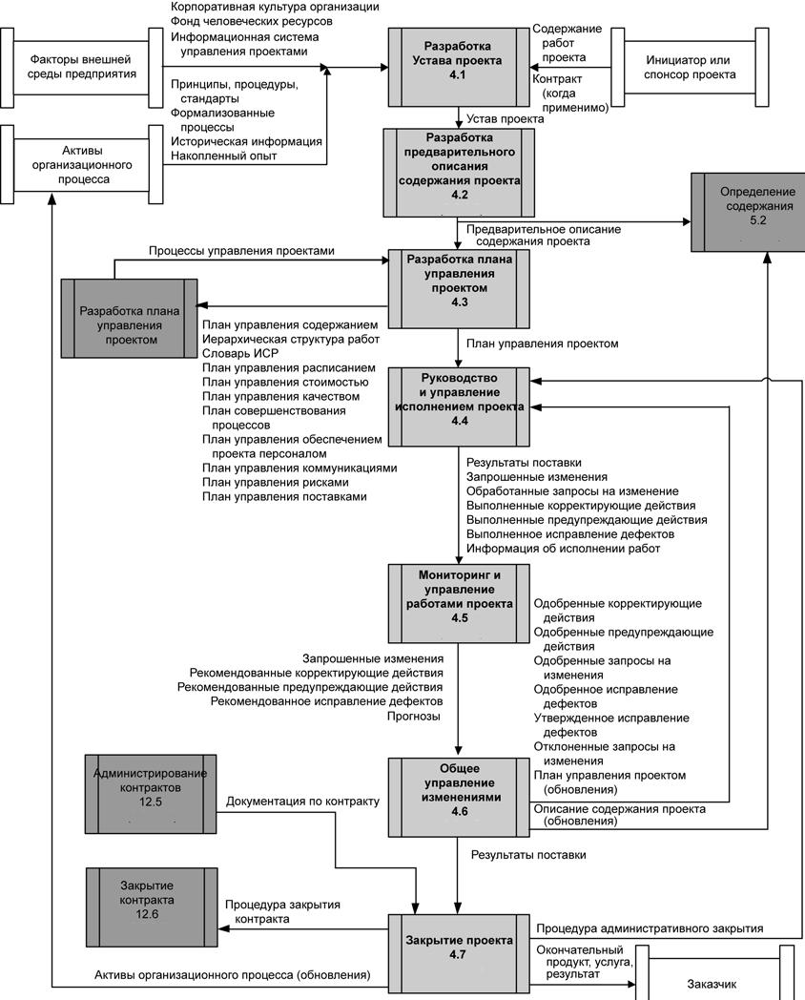

Введение
Потребность в интеграции в сфере управления проектами становится очевидной в таких ситуациях, когда имеет место взаимодействие отдельных процессов. К примеру, смета, необходимая для подготовки плана расходов на непредвиденные обстоятельства, предполагает интеграцию процессов планирования, подробно описанных в процессах Управления стоимостью проекта, Управления сроками проекта и Управления рисками проекта. При выявлении дополнительных рисков, связанных с различными альтернативами комплектования персоналом, необходимо обратиться к одному или нескольким этим процессам. Результаты поставки проекта тоже необходимо интегрировать в текущую операционную деятельность исполняющей организации (или заказчика) или в долгосрочное стратегическое планирование, учитывающее будущие проблемы и возможности.
Интегративный характер проектов и управления проектами можно лучше понять, если представить себе другие операции, выполняемые при реализации проекта.
Вот какими, к примеру, могут быть операции, выполняемые командой управления проектом:
- Проанализировать и понять содержание. Сюда относятся требования, критерии, допущения, ограничения для проекта и продукта, а также прочие относящиеся к проекту влияния и то, как будет осуществляться управление или обсуждение каждого из них в рамках проекта.
- Задокументировать конкретные критерии требований к продукту.
- Понять, как обработать имеющуюся информацию и трансформировать ее в план управления проектом при помощи группы процессов планирования.
- Создать иерархическую структуру работ.
- Принять соответствующие меры по выполнению проекта в соответствии с
- планом управления проектом, запланированным набором интегрированных процессов и запланированным содержанием.
- Оценивать и отслеживать статус проекта, его процессы и продукты.
- Анализировать риски проекта.
Зачастую связи между процессами в группах процессов управления проектами неоднократно повторяются. Например, группа процессов планирования на ранней стадии проекта предоставляет группе процессов исполнения подготовленный план управления проектом; впоследствии она участвует в его обновлении по мере появления изменений по ходу выполнения проекта.
Цель интеграции - это прежде всего эффективное интегрирование процессов в группах процессов управления проектами, необходимых для достижения целей проекта в рамках определенных процедур, принятых в организации.
Общая схема управления интеграцией проекта представлена на рисунке 5.1., пункт 4, а детальная схема представлена на рисунке 6.1. На рисунке 6.2 представлена диаграмма зависимостей процессов для управления интеграцией проекта.
Интегративные процессы управления проектами включают в себя следующие элементы:
4.1 Разработка Устава проекта - разработка Устава проекта, формально авторизующего проект или фазу проекта.
4.2 Разработка предварительного описания содержания проекта -
разработка предварительного описания содержания проекта, включающего в себя самое общее изложение содержания.
4.3 Разработка плана управления проектом - документирование операций, необходимых для определения, подготовки, интеграции всех вспомогательных планов в план управления проектами и их координации.
4.4 Руководство и управление исполнением проекта - выполнение работы, определенной в Плане управления проектом для выполнения требований, определенных в описании содержания проекта.
4.5 Мониторинг и управление работами проекта - мониторинг и управление процессами инициации, планирования, выполнения и завершения проекта для достижения целевых показателей эффективности, намеченных в Плане управления проектом.
4.6 Общее управление изменениями - обработка всех запросов на изменения, утверждение этих изменений и управление ими для оптимизации результатов поставки и активов организационного процесса.
4.7 Закрытие проекта - завершение всех операций во всех группах процессов управления проектами для формального закрытия проекта или проектной фазы.

Рисунок 6.1 - Детальная схема управления интеграцией проекта

Рисунок 6.2 - Диаграмма зависимостей процессов для управления интеграцией проекта (Показаны не все взаимодействия процессов и не все потоки данных между процессами)